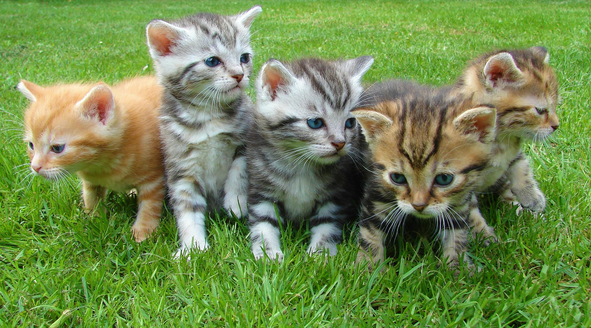

Doação Financeira
Faça sua contribuição via:
Dados Bancários:
- Banco: Dog Bank
- Agência: 1000
- Conta: 02000-0
- PIX: 12.345.678/0001-00
- Titular: ONG ProPet
ProPet — Cuidando, resgatando e conectando animais a novos lares.
Você ama animais e quer fazer a diferença? Junte-se à nossa equipe!
Disponibilidade
Disponibilidade mínima de 4 horas semanais com comprometimento e amor pelos animais.

Sua doação faz a diferença na vida dos nossos animais!
Faça sua contribuição via:
Dados Bancários:
Aceitamos:
Endereço:
Rua dos Animais, 123
Cidade Pet Land, Estado C/G
Horário:
Segunda a Sexta
9h às 17h
Contribua mensalmente com qualquer valor e ajude a manter nosso trabalho de resgate e cuidado.
Quero ser Doador MensalEstamos aqui para responder suas dúvidas
(12) 1234-5678
propet@doacao.com.br
Rua dos Animais, 123
Cidade Pet Land, Estado C/G